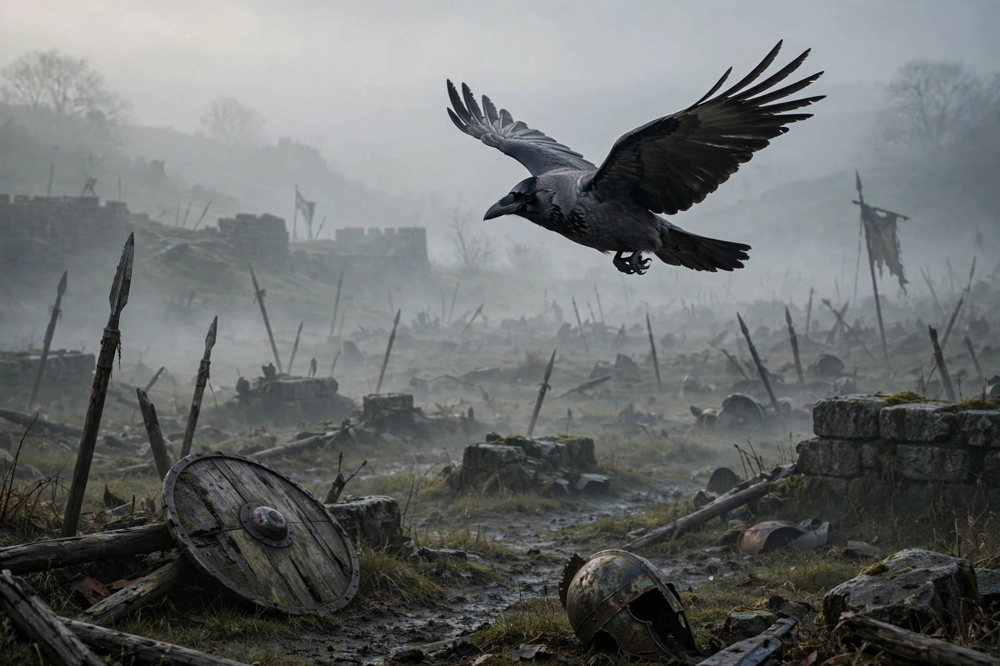

Badb

| Badb | |
|---|---|
| Old Irish | Badhbh, "crow" |
| Abode | The battlefield; the Otherworld |
| Symbols | Crow, raven |
| Consort | Net (in some traditions) |
| Parents | Ernmas (per the Lebor Gabála) |
| Siblings | Macha, the Morrígan, Ériu, Banba, Fódla |
In Irish mythology, Badb (Old Irish, pronounced roughly "bive"; Modern Irish Badhbh, meaning "crow") is a war goddess who takes the form of a crow, and is thus sometimes known as Badb Catha ("battle crow"). She is closely associated with the Morrígan and Macha, and the three are often treated as a trio of war goddesses — sometimes as three sisters, sometimes as aspects of a single deity.
Role in the myths
Badb could sow terror and confusion among armies, turning battles in favour of the side she favoured; her shrieking apparition over a battlefield was an omen of slaughter to come. She also prophesied deaths of important figures and events of cosmic significance. In some texts she appears as a "washer at the ford", a spectral woman washing the bloody armour or garments of those doomed to die, a figure related to the later folklore of the banshee (bean sídhe).
In the Táin Bó Cúailnge (Cattle Raid of Cooley), the Morrígan in her various forms harasses the hero Cú Chulainn, and Badb's crow-form is part of this complex. At the Second Battle of Mag Tuired (Cath Maige Tuired), after the victory of the Tuatha Dé Danann over the Fomorians, Badb delivers a famous prophecy poem — one of the earliest examples of prophetic verse in Irish — foretelling the end of the world, an age when "son will betray father" and natural order collapses.
Genealogy and associations
The Lebor Gabála Érenn (Book of Invasions) makes Badb a daughter of Ernmas of the Tuatha Dé Danann, sister of Macha and the Morrígan (Anann). Some traditions name her husband as Net, a god of war, and in the glosses she is paired with the goddess Némain, another panic-inducing battle deity. Her name is cognate with Gaulish Bodua, attested as an epithet in continental Celtic sources, and with the element in the name of the British queen Boudica ("victory").
The hooded crow itself is called badb in Old Irish, and the word survived in folklore for a scolding or witch-like woman.